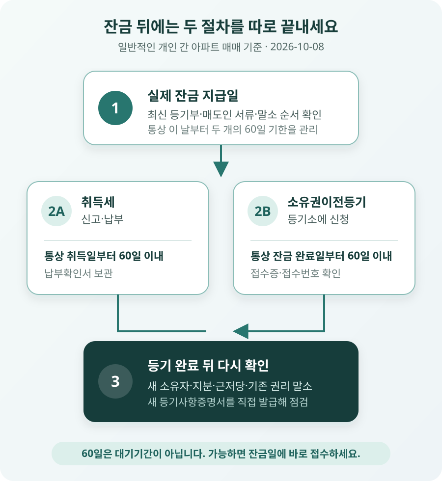

60일은 계약일과 잔금일 중 언제부터 셀까?
매매계약서를 쓴 날부터 무조건 60일을 세는 것은 아닙니다. 부동산등기 특별조치법 제2조는 부동산 소유권을 이전하는 계약을 맺은 사람이 정해진 날부터 60일 이내에 이전등기를 신청하도록 합니다. 매매처럼 양쪽이 서로 대가적인 의무를 부담하는 계약은 반대급부의 이행이 완료된 날이 출발점입니다.
표현이 어렵지만 일반적인 아파트 매매에서는 매수인이 매매대금을 모두 지급한 날, 즉 실제 잔금 지급일로 이해하면 됩니다. 계약서에 10월 8일을 잔금일로 적었더라도 당사자가 서면으로 10월 15일로 연기하고 실제로 그날 잔금을 모두 치렀다면 사실관계상 완료일을 확인해야 합니다. 반대로 잔금을 계약서보다 먼저 완납했다면 단순히 원래 예정일만 보고 기한을 계산하면 안 됩니다.
취득세 60일과 등기 60일은 같은 말일까?
잔금 뒤에는 서로 다른 두 시계를 관리해야 합니다. 하나는 세금을 신고하고 내는 기한이고, 다른 하나는 등기소에 소유권이전등기를 신청하는 기한입니다. 일반적인 유상매매에서는 출발점이 비슷해 둘 다 ‘잔금일부터 60일’로 안내되는 경우가 많지만 근거 법률과 완료 기준은 다릅니다.
| 구분 | 무엇을 하는가 | 일반 매매의 기준 | 끝났다는 증거 |
|---|---|---|---|
| 취득세 신고·납부 | 관할 지방자치단체에 취득 사실을 신고하고 세금을 냄 | 통상 취득일부터 60일 이내 | 신고서·납부확인서 |
| 소유권이전등기 신청 | 등기소에 매도인에서 매수인으로 명의 변경을 신청함 | 통상 실제 잔금 완료일부터 60일 이내 | 등기신청 접수증 |
| 등기 완료 확인 | 등기사항증명서의 소유자와 접수 내용을 확인함 | 신청 처리 뒤 | 새 등기사항증명서 |
지방세법 제20조는 취득세 과세물건을 취득한 사람이 원칙적으로 취득일부터 60일 이내에 신고·납부하도록 정합니다. 취득세를 냈다고 등기부 명의가 자동으로 바뀌는 것은 아니고, 등기를 신청했다고 세금 신고가 저절로 처리되는 것도 아닙니다. 실제 등기 신청에는 취득세 납부확인 자료가 필요하므로 보통 잔금일에 세금 신고·납부와 등기 접수를 이어서 진행합니다.

기한이 남아도 잔금일에 접수해야 하는 이유
민법 제186조에 따라 부동산에 관한 법률행위로 생기는 물권변동은 등기해야 효력이 생깁니다. 매수인이 매매대금을 모두 보내고 열쇠를 받았더라도, 소유권이전등기를 하지 않은 동안 등기부에는 여전히 매도인이 소유자로 남습니다. 60일은 과태료 없이 기다리라고 보장하는 유예기간이 아니라 신청 의무의 바깥 기한입니다.
그 사이 매도인의 채권자가 압류·가압류를 하거나 매도인이 다른 처분을 시도하면 분쟁이 커질 수 있습니다. 계약과 송금내역으로 매수인의 권리를 주장할 수 있더라도, 이미 생긴 제3자의 권리와 우선순위를 두고 소송할 가능성이 있습니다. 잔금을 보낸 뒤 법무사가 며칠 후 접수한다는 말만 듣지 말고 접수번호와 접수시각을 확인해야 합니다.
주택담보대출을 받는 거래에서는 은행이 근저당권 설정과 소유권이전을 함께 관리하기 때문에 잔금일 접수가 일반적입니다. 현금으로 사거나 셀프등기를 하는 경우에도 위험은 달라지지 않습니다. 오히려 매도인 서류의 유효기간, 인감증명서 용도, 주소 변동, 국민주택채권 매입과 취득세 납부를 본인이 모두 맞춰야 하므로 잔금 전에 일정표를 더 일찍 준비해야 합니다.
잔금을 10월 8일에 보냈다면
매매가 7억원인 아파트의 잔금 5억원을 2026년 10월 8일에 모두 지급하고, 매도인이 이전등기 서류와 열쇠를 넘겼다고 가정해 보겠습니다. 일반적인 기간 계산을 전제로 하면 60일째는 12월 7일입니다. 하지만 12월 7일까지 기다렸다가 신청하는 계획을 세우면 안 됩니다.
잔금일 등기 접수를 위해서는 그 전에 법무사 또는 셀프등기 담당자가 매도인 서류, 매수인 주민등록 자료, 매매계약서, 거래신고필증, 취득세 신고액과 국민주택채권 부담액을 확인해야 합니다. 10월 8일에 접수했다면 접수증을 받고, 처리 완료 뒤 등기사항증명서에서 새 소유자 이름·지분, 근저당권 설정 내용과 기존 권리 말소 여부를 확인합니다.
매도인이 서류 일부를 주지 않아 당일 접수하지 못했다면 ‘아직 60일 남았다’고 넘기지 마세요. 빠진 서류와 제출기한을 문자나 내용증명 등 기록이 남는 방식으로 요구하고, 등기 지연 중 새 권리변동이 없는지 등기사항증명서를 다시 확인해야 합니다. 대금을 모두 지급한 상태라면 지연 원인과 대응 기록이 특히 중요합니다.
매수인이 잔금 전에 무엇을 준비해야 할까?
서류 목록은 거래 형태와 등기 원인, 공동명의 여부, 주소 변경, 대출과 근저당 말소에 따라 달라집니다. 아래는 개인 간 일반적인 아파트 매매에서 미리 확인할 항목입니다. 실제 제출 원본과 발급일 기준은 관할 등기소 또는 담당 법무사에게 확인하세요.
| 누가 준비하나 | 주요 항목 | 잔금 전에 확인할 점 |
|---|---|---|
| 매수인 | 주민등록 관련 서류, 도장, 신분증, 매매계약서, 자금 | 등기할 이름·주소·지분, 공동명의 지분과 각자 서류 |
| 매도인 | 등기필정보, 매도용 인감증명서, 인감도장, 주민등록 관련 서류 | 매수인 인적사항, 등기부 주소와 현재 주소 연결, 공동소유자 전원 협조 |
| 중개·등기 담당 | 부동산거래계약 신고필증, 등기신청서, 위임장, 취득세·채권 자료 | 기존 근저당 말소와 새 대출 설정을 같은 날 처리하는 순서 |
- □ 잔금 송금 직전 최신 등기사항증명서에서 소유자와 새 압류·가압류·근저당을 확인했다.
- □ 취득세 신고·납부 금액과 국민주택채권 매입, 등기신청수수료를 마련했다.
- □ 매도인과 매수인 서류의 이름·주소·주민등록번호·지분이 서로 맞는지 확인했다.
- □ 잔금, 기존 대출 상환, 근저당 말소, 소유권이전 접수의 순서를 정했다.
- □ 접수 당일 접수증과 접수번호를 받고 등기 완료 확인일을 정했다.
- □ 완료 뒤 새 등기사항증명서에서 소유권과 담보권 내용을 다시 확인했다.
이미 60일을 넘겼다면 어떻게 해야 할까?
기한을 넘겼다고 소유권이전등기를 영원히 할 수 없게 되는 것은 아닙니다. 미루는 기간을 더 늘리지 말고 등기에 필요한 서류가 남아 있는지부터 확인해 바로 신청해야 합니다. 매도인이 협조한다면 새로 발급해야 할 서류를 정리하고, 관할 시·군·구의 과태료 담당 부서에 지연 사유와 필요한 자료를 문의하세요.
부동산등기 특별조치법 제11조는 등기권리자가 상당한 이유 없이 신청을 지체한 경우 과태료를 정합니다. 금액은 단순히 매매가의 일정 비율로 바로 계산하는 구조가 아니라 과세표준과 법정 세율, 지연 기간·사유 등을 반영하므로 온라인의 간단한 표만 보고 확정하지 마세요. 매도인이 필요한 서류를 주지 않았거나 불가피한 사정이 있었다면 이를 입증할 계약서, 요청 메시지, 내용증명과 발급기록을 보관합니다.
매도인이 연락을 끊거나 이전등기에 협조하지 않으면 과태료 문의만으로 해결되지 않습니다. 계약서, 잔금 송금내역, 주택 인도 자료와 등기부를 가지고 부동산 전문 변호사 또는 법률구조기관에 소유권이전등기 청구와 처분금지 가처분 필요성을 상담해야 합니다. 새 압류나 이중매매 정황이 보이면 기다리지 말고 신속히 대응하세요.
자주 묻는 질문
취득세를 먼저 냈으니 소유권은 이미 넘어온 것 아닌가요?
아닙니다. 취득세 신고·납부와 소유권이전등기는 별개입니다. 세금을 냈더라도 등기부의 소유자 명의가 자동으로 바뀌지 않습니다. 등기 접수와 완료 여부를 따로 확인해야 합니다.
법무사에게 맡겼다면 접수증까지 볼 필요가 있나요?
맡긴 뒤에도 접수번호와 접수일을 받아 두는 편이 좋습니다. 처리 완료 통지를 받으면 새 등기사항증명서를 직접 발급해 소유자, 지분, 근저당권과 말소 내용을 확인하세요. 견적서의 세금·채권·수수료와 법무사 보수도 구분해 보관합니다.
셀프등기를 하려고 잔금 뒤 서류를 천천히 준비해도 될까요?
매도인이 잔금을 받은 뒤에도 계속 협조한다는 보장은 없습니다. 매도인에게 받을 원본과 위임장, 인감증명서의 용도와 기재사항을 잔금 전에 확인하고, 가능하면 잔금일에 바로 접수할 수 있도록 준비하세요. 대출·말소·공동명의·주소 불일치가 있으면 셀프등기의 난도가 크게 올라갑니다.